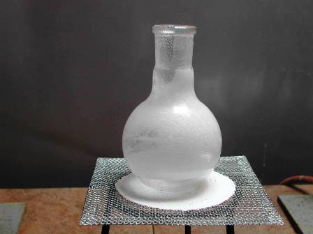
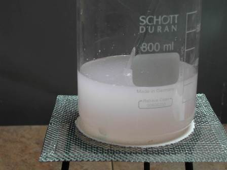
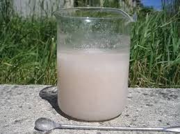
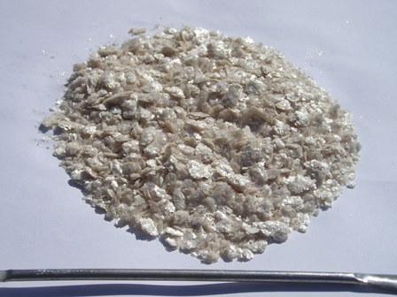

Oggi niente divagazioni storico-personali: lo chef ci schiaffa in tavola un piatto di sola chimicaccia per palati allenati. Ogni tanto una portata pesante rende più gradevoli le successive...
In seguito a una interessante discussione scaturita riguardo la solfonazione del naftalene, ho provato la sintesi del sale alcalino dell'isomero alfa dell'acido naftalensulfonico, per verificare l'andamento della solfonazione operando in condizioni "cinetiche", ovvero sfruttando la velocità di formazione elevata di questo isomero a temperatura relativamente bassa, rispetto all'andamento "termodinamico" di formazione del più stabile beta preparato in precedenza.
La procedura ricalca fedelmente quella già proposta (ved. post dedicato); ho solo ridotto di un fattore 2,5 le quantità dei reagenti, dato che si trattava di una verifica e non di una preparazione finalizzata a sintesi successive.
Verifica cioè sulla effettiva solfonazione completa e veloce in posizione alfa in condizioni fast-soft, ovvero scaldando appena a fusione e operando molto velocemente, in maniera esattamente opposta a quella necessaria per ottenere in grande maggioranza l'isomero beta.
Traducendo:
- temperatura alta e tempi lunghi --> acido 2-naftalensulfonico (prodotto "termodinamico")
- temperatura bassa e tempi brevi --> acido 1-naftalensulfonico (prodotto "cinetico")

Materiale occorrente:
- naftalene
- acido solforico
- sodio idrossido
- sodio cloruro
- vetreria opportuna
- in un pallone da 250 ml introdurre 20 g di naftalene e riscaldare fino a fusione (80°), senza oltrepassare questa temperatura.
In una beuta da 50 ml preriscaldare contemporaneamente 18 ml di H2SO4 conc. alla stessa temperatura.
Ho fatto questo per evitare di dovere riscaldare ancora la miscela alla successiva aggiunta dell'acido freddo, affinchè sia possibile operare velocemente (mi ero posto il limite di due minuti complessivi per l'intera solfonazione).
In poche porzioni, agitando vigorosamente, aggiungere l'acido al naftalene fuso, tenendo sempre d'occhio il termometro immerso; se la miscela tende ad aumentare in temperatura raffreddare leggermente affinchè si mantenga nel range 80-85°.

Il naftalene tende a sublimare facilmente e nelle zone fredde del pallone si formerà uno straterello di sostanza sublimata, che non parteciperà alla reazione.Trascorsi i due minuti complessivi dall'inizio dell'aggiunta di acido, versare subito in 250 ml di acqua fredda la miscela di H2SO4 residuo e di acido 1-naftalensulfonico formatosi.
La leggera torbidità è dovuta al naftalene non reagito, che comunque è molto poco; potrebbe essere dovuta anche a piccole quantità di dinaftilsulfone C10H7-SO2-C10H7 insolubile, ma non posso confermare che la sua formazione avvenga anche a temperatura così bassa.

In ogni caso filtrare, ottenendo una soluzione solo leggermente opalescente.Neutralizzare ora con NaOH al 20%; siccome c'è H2SO4 in eccesso ne serve una buona quantità e verso la fine procedere molto lentamente, senza far diventare basica la soluzione.
Procedere ora alla "salatura", per far precipitare la maggior quantità possibile del naftalensulfonato sodico; per far questo saturare con NaCl solido, mescolando fino a soluzione e poi aggiungere ulteriormente.

Scaldare fino a circa 80° eventualmente continuando ad aggiungere NaCl alla soluzione che a caldo rimane leggermente rosata ma quasi limpida.Lasciando raffreddare si ha abbondante separazione di 1-naftalensulfonato sodico in microcristallini leggeri ma molto meno voluminosi rispetto all'isomero beta e purtroppo molto più solubili.
Filtrare su buchner spremendo il più possibile il prodotto, che rilascia l'acqua molto facilmente.
Lavare goccia a goccia con acqua molto fredda per eliminare il più possibile i cloruri e i solfati, che in ogni caso rimarranno in piccola quantità nel prodotto; non è possibile lavare più di tanto perchè questo naftalensulfonato come dicevo è ben solubile in acqua e insistendo col lavaggio se ne perderebbe troppo.
Per questo motivo non ho ricristallizzato da NaCl perchè non avrei guadagnato in purezza e ne avrei perso ancora.
Dopo il lavaggio lasciar seccare all'aria.

Il 1-naftalensulfonato sodico si presenta sotto forma di polvere microcritallina leggera che tende a impaccarsi di colore appena appena beige; non deve odorare per niente di naftalina.
Anche questa sintesi è abbastanza facile (attenzione alla T°!) ed è servita allo scopo prefissato.
La resa ottenuta è di 12 g, pari ad un misero 33%, che si spiega in grandissima parte per le perdite per solubilità e non per il naftalene non reagito (che reputo inferiore al 10%, a parte quello sublimato).
Purtroppo non ho alcun modo di verificare la purezza in isomero alfa rispetto al beta, ma avendo operato a temperatura appena sopra il punto di fusione e molto velocemente, probabilmente il beta stava ancora organizzandosi per farsi largo nell'ambiente che già la miscela solfonante è stata buttata in acqua; quindi dovrebbe essere in netta minoranza.
Almeno credo (e spero a ragione!) che sia andata così; le proprietà diverse, anche macroscopicamente, dei due prodotti dovrebbero confermare questa ipotesi.
2 commenti